Tabelle
GRID · Tabelle, die dasselbe Element mehrfach erfasst
Was ist ein Tabellenfeld?
- 1.1Feld hinzufügen und Aufbau des Eigenschaftsbereichs
1.1Feld hinzufügen und Aufbau des Eigenschaftsbereichs
Überblick
Tabelle (GRID) ist eine Tabelle, in der dasselbe Element mehrfach erfasst wird. Sie wird für Daten verwendet, bei denen nicht im Voraus bekannt ist, wie viele Einträge es geben wird, etwa Begleitmedikation. Der größte Unterschied zu anderen Typen ist die Reihenfolge der Erstellung — zuerst definieren Sie die Spalten der Tabelle Kap. 3, die Zeilen fügt der Erfasser selbst in der Eingabemaske hinzu. Solange keine Spalten definiert sind, kann dieses Feld nichts aufnehmen.
Bildschirmbeschreibung
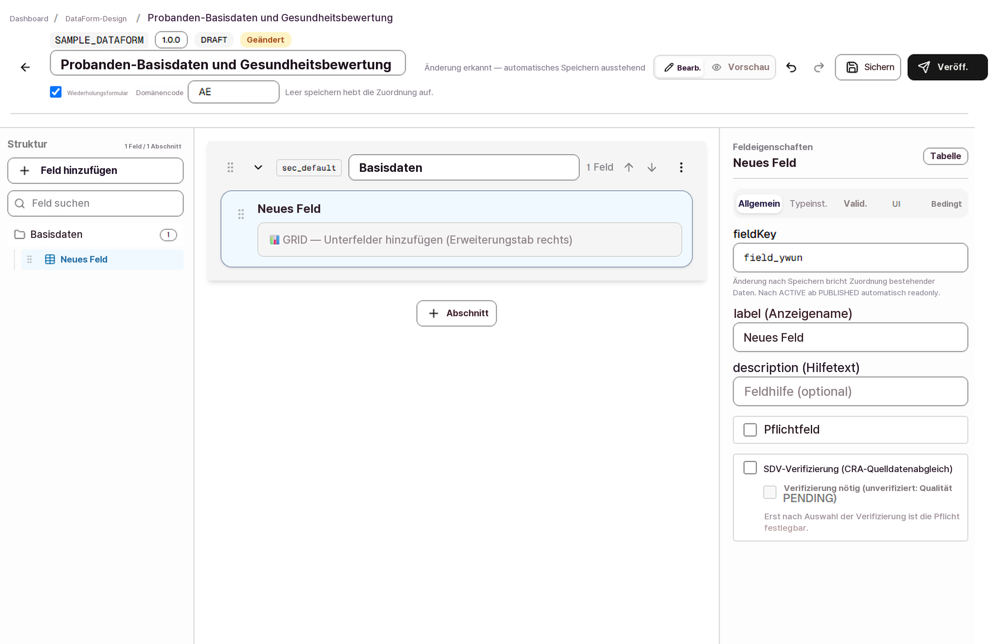
[+ Feld hinzufügen] — Wenn Sie hier den Typ festlegen, wird das Feld erstellt.
Im Strukturbaum wird ein neues Feld hinzugefügt. Das Symbol hat die Form einer Tabelle.
Auf dem WYSIWYG-Canvas erscheint statt einer Tabelle nur ein Hinweis — „GRID — Unterfelder hinzufügen (Erweiterungstab rechts)“. Der Grund: Es gibt 0 Spalten. 3.1
fieldKey — der Schlüssel, unter dem die gesamte Tabelle gespeichert wird. Es entsteht nicht je Spalte ein eigener Schlüssel, sondern ein Schlüssel pro Tabelle. 2.1
label (Anzeigename) · description (Hilfetext) — Name und ergänzende Beschreibung, die über und unter der Tabelle angezeigt werden. 2.1
Pflichtfeld — wird in 2.2 behandelt. ⚠ Dies ist eine andere Ebene als die Pflicht der Spalten.
SDV-Verifizierung — wird in 2.3 behandelt.
Typ-Badge „Tabelle“ — der Typ des ausgewählten Felds. Nach dem Hinzufügen kann er nicht geändert werden.
5 Eigenschafts-Tabs — Allgemein · Typeinstellungen · Validierung · UI · Bedingt. Die Kapitel 2–6 dieses Handbuchs entsprechen den einzelnen Tabs.
Unter SDV ist nichts vorhanden. Die bei anderen Typen vorhandenen Elemente AE-Bedeutungsrolle und „Nicht gemessen“ zulassen werden bei der Tabelle gar nicht angezeigt — da eine Tabelle mehrere Werte enthält, sind diese beiden Funktionen nicht anwendbar. 7.2
Zu beachten
Unbedingt prüfen Datenschäden · Formular nicht abschließbar
- • ⛔ Ohne definierte Spalten ist dieses Feld nutzlos. Dieser Zustand ist daran zu erkennen, dass auf dem Canvas keine Tabelle sichtbar ist — legen Sie unbedingt zuerst im Tab „Typeinstellungen“ die Spalten an. Kap. 3
- • Der Typ kann nach dem Hinzufügen nicht geändert werden, und nach der Veröffentlichung (PUBLISH) kann die Struktur selbst nicht mehr geändert werden. Haben Sie falsch gewählt, löschen Sie das Feld und fügen Sie es erneut hinzu.
Leicht missverständliches Verhalten
- • Die Zeilenanzahl legt nicht der Formularautor fest. Der Erfasser erweitert sie in der Eingabemaske mit [Zeile hinzufügen] nach Bedarf. Ein Element zum Festlegen einer minimalen oder maximalen Zeilenanzahl gibt es nicht. 7.2
- • Eine Tabelle kann keine weitere Tabelle enthalten. Als Spalten sind nur die 9 Typen verwendbar, die in eine Zelle passen. 3.2
Tab „Allgemein“ — Name · Pflicht · Verifizierung
- 2.1fieldKey · Anzeigename · Hilfetext
- 2.2Pflichtfeld
- 2.3SDV-Verifizierung (CRA-Quelldatenabgleich)
2.1fieldKey · Anzeigename · Hilfetext
Überblick
In diesem Bereich legen Sie den Namen des Felds fest. Der Speicherschlüssel (fieldKey) und der angezeigte Name (label) sind unterschiedliche Werte und dürfen zu unterschiedlichen Zeitpunkten geändert werden. Aus der Tabelle muss hervorgehen, was darin eingetragen wird, gleich wie viele Einträge; formulieren Sie den Anzeigenamen daher konkret.
Bildschirmbeschreibung
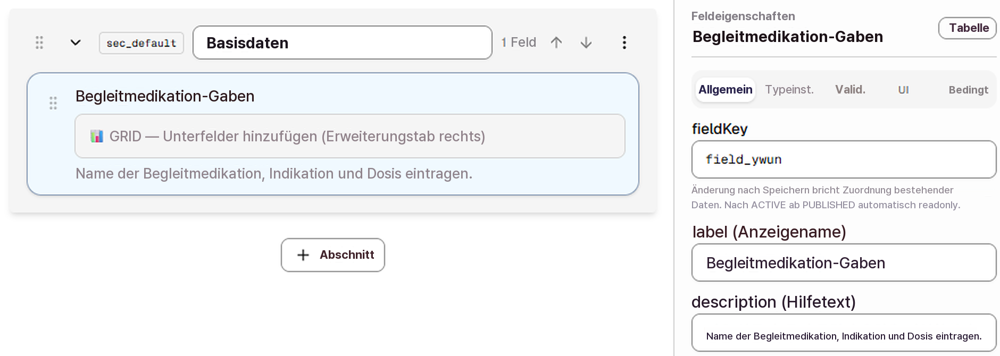
label (Anzeigename) — Geben Sie den Titel ein, der über der Tabelle angezeigt wird. In der Aufnahme Begleitmedikation-Gaben.
Wird auf dem Canvas als Tabellentitel angezeigt. Dies ist eine andere Ebene als die Spaltennamen — Spaltennamen legen Sie separat im Tab „Typeinstellungen“ fest. 3.3
description (Hilfetext) — Geben Sie die ergänzende Beschreibung ein, die unter der Tabelle angezeigt wird. Bleibt das Feld leer, wird nichts angezeigt.
Erscheint in grauer Schrift unter der Tabelle. In der Aufnahme „Name der Begleitmedikation, Indikation und Dosis eintragen.“.
fieldKey — der Schlüssel, unter dem die gesamte Tabelle gespeichert wird. Beim Hinzufügen des Felds wird er automatisch vergeben, z. B. field_ywun; wie der Bildschirmhinweis sagt: „Änderung nach Speichern bricht Zuordnung bestehender Daten“.
Zu beachten
Unbedingt prüfen Datenschäden · Formular nicht abschließbar
- • Geben Sie im Anzeigenamen an, was die Tabelle erfasst. Aus „Gaben“ allein geht nicht hervor, ob es um das Prüfpräparat oder um Begleitmedikation geht, sodass sich in derselben Tabelle Einträge unterschiedlicher Art vermischen.
- • Beschreiben Sie im Hilfetext, was zu tun ist, wenn es keinen einzigen Eintrag gibt. Eine Tabelle hat keine eigene Stelle, um „Keine“ anzugeben — eine leere Tabelle und eine noch nicht abgefragte Tabelle sehen gleich aus. Der Formularautor muss dies gestalten, etwa mit einer Spalte „Nicht zutreffend“ oder einer vorangestellten Ja/Nein-Frage. Kap. 6
- • Ändern Sie fieldKey nach dem Speichern nicht. Die Verbindung zu bereits eingegebenen Daten geht verloren, und Validierungsregeln 4.3 und bedingte Anzeigen Kap. 6, die auf dieses Feld verweisen, funktionieren ebenfalls nicht mehr.
Leicht missverständliches Verhalten
- • Der Anzeigename (label) kann jederzeit geändert werden. Gespeicherte Werte sind davon nicht betroffen.
2.2Pflichtfeld
Überblick
Hier legen Sie fest, ob das Formular nur abgeschlossen werden kann, wenn diese Tabelle ausgefüllt ist. Bei der Tabelle gibt es Pflicht auf zwei Ebenen — die Pflicht für die gesamte Tabelle hier und die Pflicht je Spalte im Tab „Typeinstellungen“ 3.3. Beide wirken jeweils unabhängig, und die Spaltenebene wirkt stärker.
Bildschirmbeschreibung
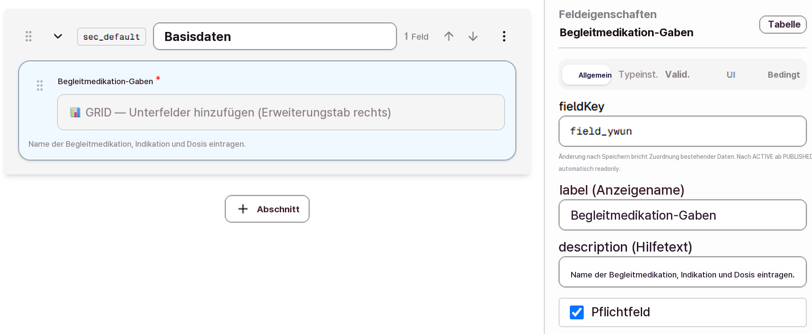
*Pflichtfeld — wenn ausgewählt, wird diese Tabelle zum Pflichtelement. Gibt es keine einzige Zeile, kann das Formular nicht abgeschlossen werden.
Auf dem Canvas erscheint rechts neben dem Tabellentitel ein rotes *. Die Markierung steht nur einmal neben dem Titel — die Sternchen je Spalte werden separat in 3.3 festgelegt.
label · description — die in 2.1 eingegebenen Werte werden unverändert angezeigt.
Zu beachten
Unbedingt prüfen Datenschäden · Formular nicht abschließbar
- • ⛔ Hat auch nur eine Spalte die Pflichtmarkierung, muss die Tabelle ausgefüllt werden, selbst wenn Sie dieses Häkchen entfernen. Das System nimmt Tabellen mit Pflichtspalten automatisch in die Abschlusszählung auf — durch Aufheben der Pflicht für die gesamte Tabelle wird sie nicht überspringbar. 3.3
- • ⛔ Wird eine Zeile hinzugefügt und leer gelassen, ist das Formular nicht abgeschlossen. Das System prüft sogar je Zeile, ob die Pflichtspalten ausgefüllt sind. Bleibt eine leere Zeile übrig, ist die Tabelle unvollständig — löschen Sie nicht benötigte Zeilen. 3.3
- • Es gibt kein Mittel, um „Nicht zutreffend“ auszudrücken. Da bei diesem Typ die Erklärung „Nicht gemessen“ nicht aktiviert werden kann, legen Sie vor der Festlegung als Pflichtfeld fest, wie Probanden ohne Begleitmedikation erfasst werden. Üblicherweise wird eine Ja/Nein-Frage vorangestellt und über die bedingte Anzeige verknüpft. Kap. 6 · 7.2
Leicht missverständliches Verhalten
- • Ausgeblendete Felder sind von der Pflichtprüfung ausgenommen. Solange ein Feld über die bedingte Anzeige Kap. 6 verborgen ist, wird das Formular auch dann abgeschlossen, wenn das Pflichtfeld leer ist.
2.3SDV-Verifizierung (CRA-Quelldatenabgleich)
Überblick
SDV (Source Data Verification) ist das Verfahren, bei dem der Monitor (CRA) die eingegebenen Werte mit den Quelldaten der Prüfstelle abgleicht. Hier legen Sie fest, ob dieses Feld Gegenstand dieses Abgleichs ist. Diese Einstellung ist bei allen Feldtypen gleich, daher ist auch der Bildschirm unabhängig vom Typ identisch.
Bildschirmbeschreibung


SDV-Verifizierung (CRA-Quelldatenabgleich) — wenn ausgewählt, wird dieses Feld in die Abgleichsliste des CRA aufgenommen. Die Festlegung gilt für die gesamte Tabelle und kann nicht je Spalte getrennt erfolgen.
Mit der Aktivierung wird das Unterelement aktiv.
Verifizierung erforderlich (unverifiziert: Qualität PENDING) — kann erst festgelegt werden, nachdem ① aktiviert wurde. Wenn aktiviert, bleibt der Qualitätsstatus der betreffenden Daten auf PENDING, bis der CRA den Abgleich abgeschlossen hat.
Bevor ① aktiviert ist, ist ② ausgegraut und inaktiv. Wie der Bildschirmhinweis sagt: „Erst nach Auswahl der Verifizierung ist die Pflicht festlegbar.“
Zu beachten
Unbedingt prüfen Datenschäden · Formular nicht abschließbar
- • ⛔ Der wichtigste Abgleichspunkt bei einer Tabelle ist die „fehlende Zeile“. Gefährlicher als die Frage, ob die eingetragenen Zeilen stimmen, sind Gaben, die in den Quelldaten stehen, aber in der Tabelle fehlen — das System kann fehlende Zeilen nicht erkennen, daher hängt dies vollständig vom Abgleich durch den CRA ab.
- • ⛔ Je mehr Zeilen, desto größer der Abgleichsaufwand. Prüfen Sie, bevor Sie übermäßig viele Spalten anlegen, ob sich das jeweilige Element tatsächlich abgleichen lässt. 3.3
Leicht missverständliches Verhalten
- • Bei einer Wertänderung wird die Verifizierung aufgehoben. Selbst wenn nur eine Zelle einer Zeile korrigiert wird, fällt der Qualitätsstatus der gesamten Tabelle auf PENDING zurück, und der CRA muss erneut abgleichen.
Hinweis
- • Der Qualitätsstatus durchläuft PENDING → VERIFIED → CLEAN. Ist auch nur ein Feld mit Verifizierungspflicht unverifiziert, können die betreffenden Daten nicht CLEAN werden.
Tab „Typeinstellungen“ — Spaltendefinition (Kern dieses Typs)
- 3.1Anfangszustand ohne Spalten
- 3.2Spalte hinzufügen
- 3.3Spalteneinstellungen — Tabelle fertigstellen
3.1Anfangszustand ohne Spalten
Überblick
Dies ist der wichtigste Tab bei der Tabelle. Der Tab „Typeinstellungen“ anderer Typen enthält Elemente wie Länge · Bereich · Standardwert, bei der Tabelle gibt es dagegen nur die Spaltendefinition. Denn hier wird vollständig festgelegt, was die Tabelle aufnimmt.
Bildschirmbeschreibung
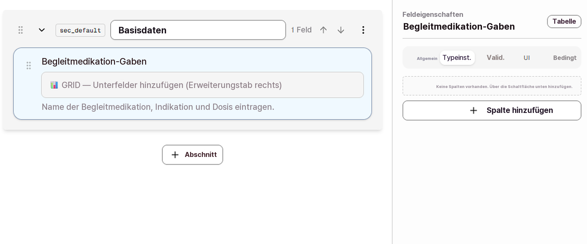
[+ Spalte hinzufügen] — erstellt die erste Spalte. Der Bildschirm nach der Auswahl wird in 3.2 erläutert.
Ohne Spalten erscheint der Hinweis „Keine Spalten vorhanden. Über die Schaltfläche unten hinzufügen.“.
Derselbe Zustand zeigt sich auch auf dem Canvas — „GRID — Unterfelder hinzufügen (Erweiterungstab rechts)“. Die Tabelle wird noch nicht dargestellt.
Typ-Badge „Tabelle“ — der Typ des Felds, das gerade eingestellt wird.
Eigenschafts-Tabs — aktuell ist der Tab Typeinstellungen geöffnet.
Zu beachten
Unbedingt prüfen Datenschäden · Formular nicht abschließbar
- • ⛔ Bevor Spalten angelegt sind, gibt es keine speicherbaren Werte. Wird in diesem Zustand veröffentlicht, sieht der Erfasser nur einen Hinweistext, ohne etwas eingeben zu können. 1.1
Leicht missverständliches Verhalten
- • Es gibt kein Element Standardwert (defaultValue). Da eine Tabelle mehrere Werte enthält, gibt es kein Mittel, sie vorab auszufüllen — ein Unterschied zu einzeiligem Text · Zahl usw. 7.2
- • Auch ein Element automatische Berechnung (calculation) gibt es nicht. Die gesamte Tabelle als einen einzigen Zahlenwert zu berechnen, ist nicht möglich. Wird eine Summe benötigt, legen Sie ein separates Zahlenfeld an. 7.2
- • Ein Element zum Festlegen einer minimalen · maximalen Zeilenanzahl gibt es nicht. Muss die Zeilenanzahl begrenzt werden, weisen Sie im Hilfetext darauf hin und prüfen Sie dies in der SDV-Phase. 2.1 · 2.3
3.2Spalte hinzufügen
Überblick
Sobald Sie eine Spalte hinzufügen, erscheint sofort eine Tabelle auf dem Canvas. Jede angelegte Spalte entspricht einer Spalte der Tabelle, und jede Spalte hat einen eigenen Namen · Speicherschlüssel · eine eigene Eingabeart. Sie können sich also jede einzelne Spalte als kleines Feld vorstellen.
Bildschirmbeschreibung
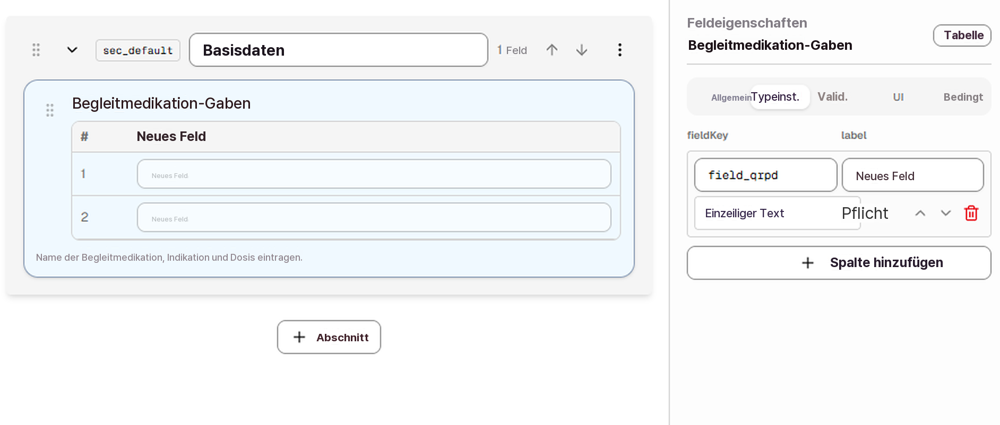
[+ Spalte hinzufügen] — erstellt eine weitere Spalte. Mit jeder Auswahl kommt eine Spalte hinzu.
Auf dem Canvas wird die Tabelle dargestellt. ⚠ Die 2 sichtbaren Zeilen sind ein Beispiel für die Vorschau — die echte Eingabemaske beginnt mit 1 Zeile, und der Erfasser erweitert sie mit [Zeile hinzufügen]. 1.1
fieldKey — der Schlüssel, unter dem der Wert dieser Spalte gespeichert wird. Er wird automatisch vergeben, z. B. field_qrpd, und gilt nur innerhalb der Tabelle.
label — der Spaltenname. Anfangs Neues Feld.
Wird als Spaltenkopf der Tabelle angezeigt. In der Eingabemaske wird derselbe Wert auch als Hinweistext in der Zelle verwendet. 5.4
Typ — die Eingabeart dieser Spalte. Anfangs Einzeiliger Text. Zur Auswahl stehen 9 Typen — Einzeiliger Text · Zahl · Datum · Datum+Uhrzeit · Wahr/Falsch · Einzelauswahl · Mehrfachauswahl · Telefonnummer · E-Mail.
Pflicht — legt fest, ob diese Spalte ausgefüllt werden muss. 2.2 · 3.3
Reihenfolge verschieben (∧ ∨) und Löschen — ändert die Reihenfolge der Spalten von links nach rechts oder entfernt eine Spalte.
Zu beachten
Unbedingt prüfen Datenschäden · Formular nicht abschließbar
- • ⛔ Verstehen Sie die 2 Zeilen auf dem Canvas nicht als Einstellung der Zeilenanzahl. Die Tabelle in der Erstellungsansicht ist nur ein Beispiel, das die Form zeigt; die Zeilenanzahl bestimmt der Erfasser. 1.1
- • ⛔ Mehrzeiliger Text · Datei-Upload · Adresse · Skala können keine Spalten sein. Diese Typen passen nicht in eine Zelle und sind daher aus der Liste ausgeschlossen — werden solche Elemente benötigt, legen Sie sie als separate Felder außerhalb der Tabelle an. 1.1
Leicht missverständliches Verhalten
- • Ein Spalten-fieldKey gilt nur innerhalb der Tabelle. In Validierungsregeln 4.3 oder der bedingten Anzeige Kap. 6 anderer Felder kann nicht direkt auf eine Spalte verwiesen werden. 7.2
Hinweis
- • Die Reihenfolge der Spalten ist die Spaltenreihenfolge der Tabelle. Ordnen Sie sie in der Reihenfolge an, in der der Erfasser liest — später können Sie sie mit ∧ ∨ ändern.
3.3Spalteneinstellungen — Tabelle fertigstellen
Überblick
Für jede Spalte legen Sie vier Dinge fest: Speicherschlüssel · Name · Eingabeart · Pflicht. Die Aufnahme zeigt die fertige Tabelle „Begleitmedikation-Gaben“ mit den drei Spalten Präparat · Indikation · Einzeldosis. Nur Präparat und Einzeldosis sind Pflicht, die Indikation ist optional.
Bildschirmbeschreibung
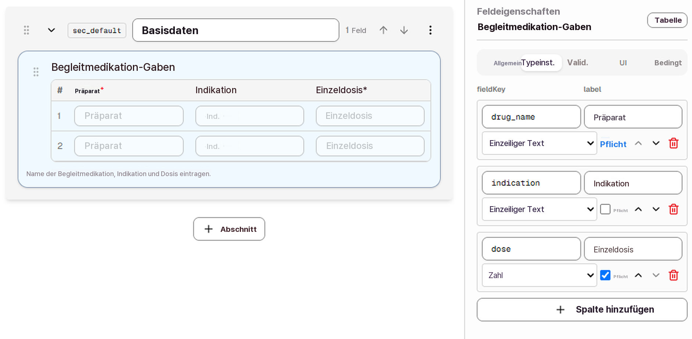
*fieldKey — Wenn Sie den automatisch vergebenen Schlüssel in einen sprechenden Namen ändern, etwa drug_name, sind die Exportdaten leichter lesbar.
label — der Spaltenname. In der Aufnahme Präparat.
Der Spaltenkopf der Tabelle ändert sich auf diesen Namen.
Typ — die drei Spalten in der Aufnahme sind Einzeiliger Text · Einzeiliger Text · Zahl. Die Einzeldosis muss numerisch verglichen und ausgewertet werden und ist daher als Zahl angelegt.
Pflicht — in der Aufnahme sind nur Präparat und Einzeldosis ausgewählt.
Bei Spalten mit Pflichtmarkierung steht neben dem Spaltenkopf ein rotes *. Bei Indikation steht es nicht.
Zweite Spalte — indication / Indikation / Einzeiliger Text / keine Pflicht.
Dritte Spalte — dose / Einzeldosis / Zahl / Pflicht.
[+ Spalte hinzufügen] — fügt weitere Spalten hinzu.
Die Spalte # ist die Zeilennummer. Sie wird vom System automatisch vergeben und nicht vom Formularautor erstellt.
Zu beachten
Unbedingt prüfen Datenschäden · Formular nicht abschließbar
- • ⛔ Die Spaltenpflicht wirkt stärker als die Pflicht für die gesamte Tabelle. Hat auch nur eine Spalte die Pflichtmarkierung, wird die Tabelle in die Abschlusszählung aufgenommen, selbst wenn „Pflichtfeld“ im Tab „Allgemein“ deaktiviert ist, und es wird sogar je Zeile geprüft, ob diese Zelle ausgefüllt ist. 2.2
- • ⛔ Legen Sie fieldKey vor der Veröffentlichung endgültig fest. Wird er nach dem Speichern geändert, geht nur für die bereits eingegebenen Werte dieser Spalte die Verbindung verloren — die Tabelle bleibt bestehen und nur eine Spalte ist leer, was schwer zu bemerken ist. 2.1
- • Legen Sie Zahlenwerte unbedingt als Typ Zahl an. Bei einzeiligem Text werden Einheiten wie
500mgmit eingetragen, sodass weder Auswertung noch Vergleich möglich ist. Nehmen Sie die Einheit in den Spaltennamen auf (z. B.Einzeldosis(mg)).
Leicht missverständliches Verhalten
- • Mit Auswahlspalten wird die Schreibweise vereinheitlicht. Elemente mit festen Antwortmöglichkeiten wie die Indikation als Einzelauswahl anzulegen, verringert unterschiedliche Schreibweisen für dieselbe Bedeutung. 3.2
Tab „Validierung“ — Wertprüfung vor dem Speichern
- 4.1Ohne Validierungsregeln
- 4.2Regel hinzufügen
- 4.3Fertig erstellte Regel — Vergleich mit anderem Feld
4.1Ohne Validierungsregeln
Überblick
In diesem Tab sammeln Sie Regeln, die vor dem Speichern prüfen, ob ein Wert die Bedingungen erfüllt. Bei der Tabelle ist der Anwendungsbereich dieses Tabs sehr eng — der Wert einer Tabelle ist ein Bündel aus mehreren Zeilen, daher sind Prüfungen wie Länge·
Bildschirmbeschreibung
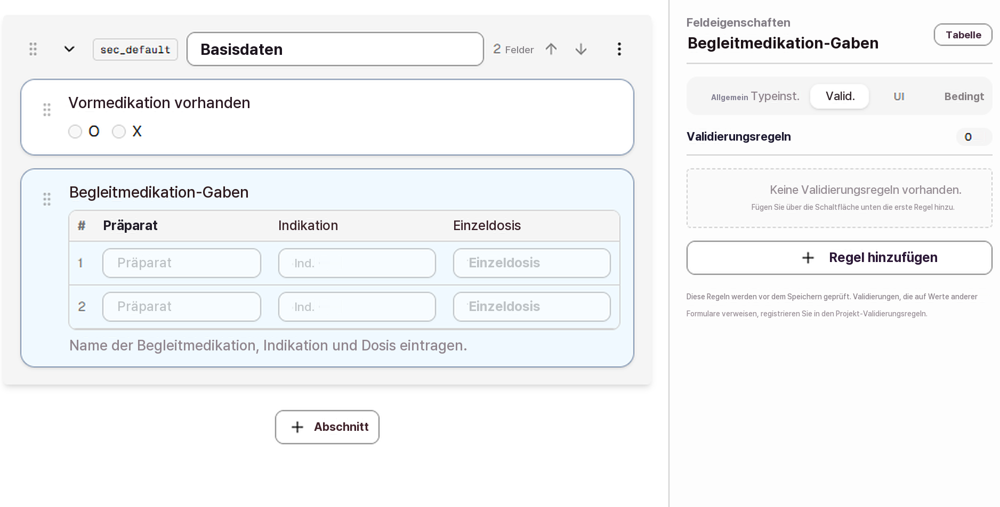
[+ Regel hinzufügen] — erstellt die erste Regel. Der Bildschirm nach der Auswahl wird in 4.2 erläutert.
Bereich Validierungsregeln und Anzahl der registrierten Regeln. Anfangs 0 Regeln.
Ohne Regeln erscheint der Hinweis „Keine Validierungsregeln vorhanden. Fügen Sie über die Schaltfläche unten die erste Regel hinzu.“
Hinweis unten — „Diese Regeln werden vor dem Speichern geprüft. Validierungen, die auf Werte anderer Formulare verweisen, registrieren Sie in den Projekt-Validierungsregeln.“
Zu beachten
Unbedingt prüfen Datenschäden · Formular nicht abschließbar
- • ⛔ Prüfungen je Spalte können in diesem Tab nicht erstellt werden. Für eine Regel wie „Einzeldosis muss größer als 0 sein“ gibt es keine Stelle — die Regeln dieses Tabs behandeln die gesamte Tabelle als einen einzigen Wert. An einer Spalte steuerbar sind nur Typ und Pflicht. 3.3
- • ⛔ Auch Prüfungen, die Zeilen miteinander vergleichen, gibt es nicht. Wird dasselbe Präparat in zwei Zeilen doppelt eingegeben, kann das System dies nicht herausfiltern — dies muss in der SDV-Phase von einer Person geprüft werden. 2.3
- • ⛔ Validierungen, die auf Werte anderer Formulare verweisen, können hier nicht erstellt werden. Registrieren Sie solche Regeln im Bildschirm „Projekt-Validierungsregeln“ — allerdings kann auch dort ein Tabellenfeld nicht als Referenzziel ausgewählt werden. 7.2
Leicht missverständliches Verhalten
- • In der Aufnahme gibt es zwei Felder: „Vormedikation vorhanden“ (Einzelauswahl) und „Begleitmedikation-Gaben“ — von der Antwort im ersten Feld hängt ab, ob die Tabelle abgefragt wird; deshalb wird in 4.3 eine Regel behandelt, die beide Felder verknüpft.
4.2Regel hinzufügen
Überblick
Wenn Sie in 4.1 [+ Regel hinzufügen] wählen, wird der Block Regel 1 erstellt. Anfangs ist „Wertebereich“ eingestellt, doch der Wert einer Tabelle ist keine Zahl, sondern ein Bündel von Zeilen, sodass ein Größenvergleich nicht möglich ist. Ändern Sie dies auf „Vergleich mit anderem Feld“ — die einzige Art, die bei Tabellen verwendbar ist. 4.3
Bildschirmbeschreibung
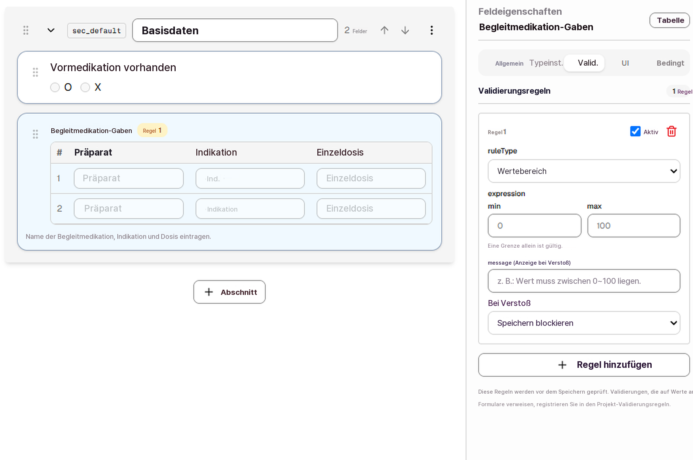
[+ Regel hinzufügen] — erstellt eine weitere Regel. (Dieselbe Schaltfläche, die Sie in 4.1 gewählt haben.)
Neben dem Tabellentitel auf dem Canvas erscheint das Badge „Regel 1“.
Die Regelanzahl ändert sich auf 1 Regel.
Checkbox Aktiv und Symbol Löschen — Sie können die Regel vorübergehend aussetzen, ohne sie zu löschen.
ruleType — die Art der Regel. Direkt nach dem Erstellen ist „Wertebereich“ eingestellt; ändern Sie sie daher unbedingt auf „Vergleich mit anderem Feld“.
min — das Feld für die Untergrenze, das bei Auswahl von Wertebereich erscheint.
max — das Feld für die Obergrenze, das unter derselben Bedingung erscheint.
message (Anzeige bei Verstoß) — der Text, der Benutzern bei einem Regelverstoß angezeigt wird.
Bei Verstoß — Wählen Sie Speichern blockieren oder Warnung. (Je nach ruleType ist die Auswahl teils nicht möglich — 4.3)
Die blasse Schrift 0 · 100 und „Eine Grenze allein ist gültig.“ sind Hinweise zum Wertebereich und keine eingestellten Werte.
Zu beachten
Unbedingt prüfen Datenschäden · Formular nicht abschließbar
- • ⛔ Mit „Wertebereich“ lässt sich die Zeilenanzahl nicht begrenzen. min · max prüfen nicht die Zeilenanzahl, sondern die Größe des Werts; da der Wert einer Tabelle keine Zahl ist, geschieht nichts — es erscheint auch kein Fehler, sodass Sie fälschlich annehmen, eine Regel sei gesetzt.
- • ⛔ Setzen Sie „Format (Regex)“ nicht auf eine Tabelle — das Speichern bleibt dauerhaft blockiert. Der reguläre Ausdruck prüft das gesamte Zeilenbündel, nachdem es in eine feste interne Zeichenkette umgewandelt wurde; gleich welcher Ausdruck gesetzt ist, entsteht ab der ersten eingetragenen Zeile ein Verstoß, und der Erfasser hat keine Möglichkeit mehr, das Formular zu speichern.
- • ⛔ Auch „Dezimalstellen“ funktioniert nicht. Selbst wenn Sie die Nachkommastellen der Einzeldosis begrenzen möchten, erreichen Sie die Spalten von diesem Tab aus nicht. 4.1
- • Bleibt message leer, wissen Benutzer nicht, warum gesperrt wurde. Geben Sie unbedingt einen Text ein.
4.3Fertig erstellte Regel — Vergleich mit anderem Feld
Überblick
Wenn Sie ruleType auf Vergleich mit anderem Feld ändern, wird mit dem Wert eines anderen Felds im selben Formular verglichen. So lässt sich eine Beziehung ausdrücken, bei der von der Antwort auf eine vorherige Frage abhängt, ob die Tabelle abgefragt wird, etwa „Tabelle nur annehmen, wenn eine Vormedikation als vorhanden angegeben wurde“; dies ist die einzige Regel, die bei Tabellen korrekt funktioniert. Das Vergleichselement muss unbedingt ein anderes Feld als die Tabelle sein — lesen Sie den Abschnitt „Zu beachten“ unten.
Bildschirmbeschreibung
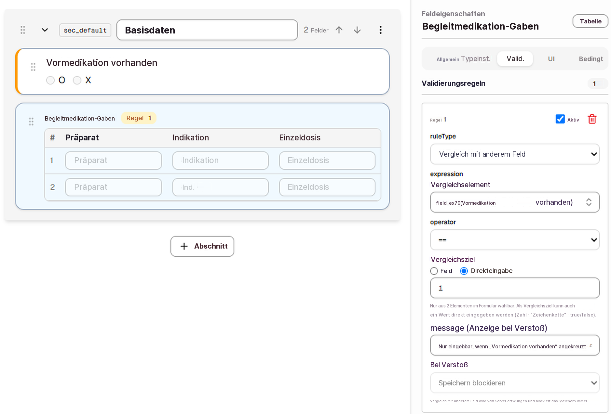
1 istruleType = Vergleich mit anderem Feld — Wenn ausgewählt, werden die Felder darunter für den Vergleich umgestellt.
Vergleichselement — Wählen Sie ein anderes Feld im selben Formular. In der Aufnahme field_ex70(Vormedikation vorhanden), ein Einzelauswahlfeld vor der Tabelle. ⚠ Hier darf nicht die Tabelle selbst gewählt werden.
operator — die Vergleichsart. In der Aufnahme == (gleich).
Vergleichsziel — Wählen Sie zwischen Feld und Direkteingabe. In der Aufnahme wurde per Direkteingabe 1 eingetragen — der gespeicherte Wert von „Vormedikation vorhanden“.
message (Anzeige bei Verstoß) — in der Aufnahme Nur eingebbar, wenn „Vormedikation vorhanden“ angekreuzt wurde..
Bei Verstoß — grau und inaktiv. Wie der Bildschirmhinweis sagt: „Vergleich mit anderem Feld wird vom Server erzwungen und blockiert das Speichern immer.“ — bei dieser Regel kann keine Warnung gewählt werden; sie ist auf Speichern blockieren festgelegt.
Bildschirmhinweis — „Nur aus 2 Elementen im Formular wählbar. Als Vergleichsziel kann auch ein Wert direkt eingegeben werden (Zahl · "Zeichenkette" · true/false).“ Da diese Liste auch die Tabelle selbst enthält, gehen Sie bei der Auswahl sorgfältig vor.
Zu beachten
Unbedingt prüfen Datenschäden · Formular nicht abschließbar
- • ⛔ Wird als Vergleichselement die Tabelle selbst gewählt, ist das Speichern dauerhaft blockiert. Der Wert einer Tabelle ist ein Bündel von Zeilen und kann niemals gleich
1sein; ab der ersten eingetragenen Zeile entsteht ein Verstoß. Da die Eingabemaske von Anfang an mit 1 Zeile beginnt, ist der Erfasser blockiert, bevor er überhaupt etwas eingibt. 3.2 - • ⛔ Als Vergleichsziel geben Sie nicht den Bildschirmtext, sondern den gespeicherten Wert ein. „Vormedikation vorhanden“ wird auf dem Bildschirm als
O·Xangezeigt; prüfen Sie daher zuerst in der Optionsliste dieses Felds, ob der gespeicherte Wert tatsächlich1ist — andernfalls wird das Speichern auch bei angekreuzter Option blockiert. - • Dieselbe Beziehung lässt sich auch mit der bedingten Anzeige 6.2 abbilden. Werden beide gesetzt, entsteht eine Doppelung, die weder abfragt noch das Speichern zulässt; verwenden Sie daher nur eine davon — bei Tabellen wird die bedingte Anzeige empfohlen. 6.1
Leicht missverständliches Verhalten
- • Referenzschlüssel und Zeichenkette unterscheiden sich von der Aufnahme in 6.2. Die beiden Bildschirme wurden zu unterschiedlichen Zeitpunkten aufgenommen, daher unterscheiden sich nur die automatisch vergebenen Schlüssel (
field_ex70·field_8y7i); beide verweisen auf das Element „Vormedikation vorhanden“. 2.1
Tab „UI“ — Bildschirmanordnung und Hinweistexte
- 5.1Gesamtaufbau des Tabs „UI“
- 5.2Layoutbreite
- 5.3Schreibgeschützt · Ausblenden
- 5.4placeholder · helpText
5.1Gesamtaufbau
Überblick
In diesem Tab legen Sie nicht den Wert selbst fest, sondern wie er auf dem Bildschirm angeordnet und erläutert wird. Die Einstellungen dieses Tabs ändern die gespeicherten Daten selbst nicht. Bei der Tabelle ist die Layoutbreite besonders wichtig — eine Tabelle ist breit, und wird die Breite verringert, bricht sie als Erstes zusammen. 5.2
Bildschirmbeschreibung
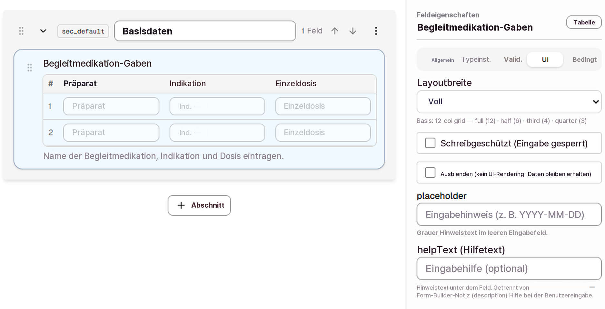
Layoutbreite — die Breite, die diese Tabelle in einer Zeile des Formulars einnimmt. 5.2
Schreibgeschützt (Eingabe gesperrt) — zeigt an, verhindert aber Änderungen. Auch die Schaltflächen zum Hinzufügen · Löschen von Zeilen verschwinden. 5.3
Ausblenden (kein UI-Rendering · Daten bleiben erhalten) — blendet auf dem Bildschirm aus. Die gesamte Tabelle verschwindet. 5.3
placeholder — wird bei der Tabelle nicht angewendet. Als Hinweistext in den Zellen wird unverändert der Spaltenname verwendet, daher kann er hier nicht geändert werden. 5.4
helpText (Hilfetext) — Hinweistext, der unter der Tabelle angezeigt wird. Dieser funktioniert normal. 5.4
Typ-Badge „Tabelle“
Zu beachten
Unbedingt prüfen Datenschäden · Formular nicht abschließbar
- • ⛔ Eine Eingabe in placeholder ändert den Bildschirm nicht. Die in den Zellen sichtbaren Texte „Präparat“ · „Indikation“ · „Einzeldosis“ sind Spaltennamen — um sie zu ändern, korrigieren Sie das Spalten-label im Tab „Typeinstellungen“. 3.3 · 5.4
- • ⛔ Ausblenden löscht keine gespeicherten Zeilen. Sie werden nur auf dem Bildschirm verborgen; die Werte bleiben erhalten und sind in Export und Audit-Trail enthalten. 5.3
Leicht missverständliches Verhalten
- • Die Einstellungen in diesem Tab ändern gespeicherte Werte nicht. Nur Anordnung und Hinweise ändern sich.
Hinweis
- • Verwenden Sie Schreibgeschützt und Ausblenden nicht zusammen. Ausblenden hat Vorrang, die Einstellung Schreibgeschützt bleibt dann wirkungslos. 5.3
5.2Layoutbreite
Überblick
Hier legen Sie die eingenommene Breite dieser Tabelle in einer Formularzeile fest. Die Tabelle teilt die festgelegte Breite erneut durch die Anzahl der Spalten; wird die Breite verringert, wird sie daher schneller unlesbar als jeder andere Typ.
Bildschirmbeschreibung
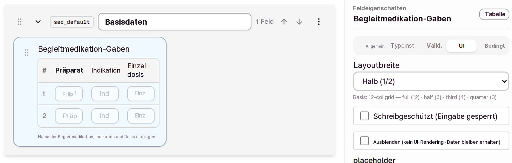
Layoutbreite — Wählen Sie zwischen Voll · Halb (1/2) · 1/3 · 1/4.
Durch die Verkleinerung der Tabelle auf halbe Breite bricht der Spaltenkopf „Einzeldosis“ in zwei Zeilen um, und die Hinweistexte in den Zellen werden wie Präp! · Ind abgeschnitten, sodass nicht mehr erkennbar ist, wofür die Zelle dient. Und das bei nur drei Spalten.
Basis: 12-col grid — wie der Bildschirmhinweis sagt: „full (12) · half (6) · third (4) · quarter (3)“. Die Tabelle teilt diese Breite erneut durch die Anzahl der Spalten, daher ist die tatsächlich wahrgenommene Breite deutlich geringer.
Zu beachten
Unbedingt prüfen Datenschäden · Formular nicht abschließbar
- • ⛔ Stellen Sie eine Tabelle unbedingt auf volle Breite. Schon bei Halb bricht der Spaltenkopf um und Zelltexte werden abgeschnitten — bei 1/3 · 1/4 ist die Tabelle praktisch nicht mehr verwendbar.
- • ⛔ Je mehr Spalten, desto schneller bricht die Darstellung zusammen. Wenn Sie 5 oder mehr Spalten planen, kann es selbst bei voller Breite eng werden; legen Sie daher nur wirklich benötigte Spalten an. 3.3
Leicht missverständliches Verhalten
- • Abgeschnitten ist nur der Hinweistext; die Funktion der Felder bleibt unverändert. Eingabe und Speichern funktionieren normal, die Felder sehen nur schmal aus — gerade deshalb fällt es schwerer auf.
Hinweis
- • Ohne Angabe gilt die volle Breite.
5.3Schreibgeschützt · Ausblenden
Überblick
Mit diesen Einstellungen wird die Tabelle angezeigt, aber nicht änderbar gemacht oder auf dem Bildschirm verborgen, wobei die Werte erhalten bleiben. Keine der beiden löscht gespeicherte Zeilen, und beide gelten für die gesamte Tabelle — eine Einstellung, die nur bestimmte Spalten sperrt oder verbirgt, gibt es nicht.
Bildschirmbeschreibung
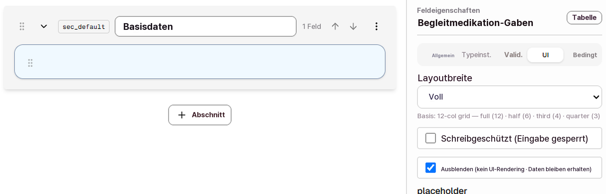
Schreibgeschützt (Eingabe gesperrt) — wenn ausgewählt, wird die Tabelle angezeigt, kann vom Erfasser aber nicht geändert werden. Auch die Schaltfläche [Zeile hinzufügen] und das Symbol zum Löschen von Zeilen verschwinden.
Ausblenden (kein UI-Rendering · Daten bleiben erhalten) — Wenn aktiviert, wird diese Tabelle in der Eingabemaske nicht angezeigt.
Von der Karte auf dem Canvas bleibt nur ein leerer Rahmen. Weder Titel noch Tabelle werden angezeigt.
Layoutbreite — der in 5.2 eingestellte Wert.
Zu beachten
Unbedingt prüfen Datenschäden · Formular nicht abschließbar
- • ⛔ Verdecken Sie falsch eingetragene Zeilen nicht durch Ausblenden. Die Werte bleiben erhalten und sind in Export und Audit-Trail enthalten — ist ein Eintrag zu entfernen, muss die betreffende Zeile gelöscht und nicht verborgen werden. 4.3
- • ⛔ Bei Schreibgeschützt kann der Erfasser keine Zeilen hinzufügen. Bei anderen Typen bedeutet dies etwa „nur ansehen“, bei einer Tabelle wird jedoch das Erfassen selbst unmöglich — verwenden Sie dies nur, wenn Sie aus anderer Quelle übernommene Daten anzeigen.
Leicht missverständliches Verhalten
- • Um ein Feld abhängig von Bedingungen zu verbergen, verwenden Sie die bedingte Anzeige. Ausblenden in diesem Tab verbirgt das Feld immer. Kap. 6
Hinweis
- • Werden Ausblenden und Schreibgeschützt zusammen gewählt, hat Ausblenden Vorrang.
5.4placeholder · helpText
Überblick
Hier legen Sie die Hinweistexte fest, die in und unter dem Eingabefeld erscheinen. Bei der Tabelle ergeht es den beiden Elementen unterschiedlich — helpText funktioniert normal, placeholder wird jedoch nicht angewendet. Die Aufnahme ist der Beleg dafür.
Bildschirmbeschreibung
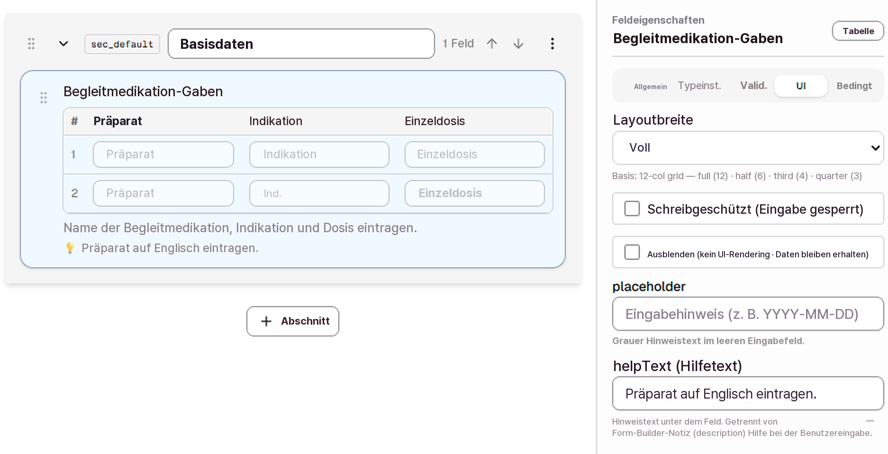
placeholder — blasse Schrift, die im Eingabefeld angezeigt wird, solange kein Wert vorhanden ist. In der Aufnahme ist er leer; zu sehen ist nur der Hinweistext „Eingabehinweis (z. B. YYYY-MM-DD)“.
Trotzdem werden in den Zellen der Tabelle „Präparat“ · „Indikation“ · „Einzeldosis“ bereits angezeigt. Diese Texte sind nicht placeholder, sondern der unverändert verwendete Spaltenname (label); um sie zu ändern, müssen Sie das Spalten-label im Tab „Typeinstellungen“ korrigieren. 3.3
helpText (Hilfetext) — der Hinweistext, der unter der Tabelle angezeigt wird. In der Aufnahme „Präparat auf Englisch eintragen.“.
Erscheint unter der Tabelle zusammen mit dem Symbol 💡. Dieser funktioniert normal.
description (Hilfetext) — der in 2.1 eingegebene Text. Er ist ein anderes Element als helpText und wird ohne Symbol in der Zeile darüber angezeigt.
Zu beachten
Unbedingt prüfen Datenschäden · Formular nicht abschließbar
- • ⛔ In placeholder eingetragener Text wird nirgends angezeigt. Der Hinweis in den Zellen ist der Spaltenname und kann über dieses Feld nicht geändert werden — tragen Sie hier etwas ein, erreicht der vermeintlich eingestellte Hinweis den Erfasser nicht. 5.1
- • Arbeiten Sie Hinweise je Spalte in den Spaltennamen ein. Sind Einheit oder Format wichtig, ist es die einzige bei Tabellen verfügbare Möglichkeit, sie wie bei
Einzeldosis(mg)direkt in den Namen zu schreiben. 3.3
Leicht missverständliches Verhalten
- • Hinweise zur gesamten Tabelle schreiben Sie in helpText. Steht dort wie in der Aufnahme „Präparat auf Englisch eintragen.“, lassen sich Abweichungen in der Schreibweise verringern — da dies per Validierung nicht erzwungen werden kann 4.1 · 4.2, ist dieser Text praktisch das einzige Steuerungsmittel.
- • description und helpText werden zusammen angezeigt. Wenn Sie beide eingeben, entstehen zwei Zeilen; schreiben Sie daher nicht zweimal denselben Inhalt. 2.1
Tab „Bedingt“ — Anzeige abhängig von anderen Werten
- 6.1Bedingte Anzeige aktivieren
- 6.2Bedingung festlegen
6.1Bedingte Anzeige aktivieren
Überblick
Mit dieser Funktion wird diese Tabelle abhängig vom Wert eines anderen Felds angezeigt oder verborgen. Sie eignet sich besonders gut für Tabellen — da eine Tabelle keine Stelle hat, um „Nicht zutreffend“ anzugeben 2.1, ist es die sauberste Lösung, abhängig von der Antwort auf eine vorherige Frage gar nicht erst zu fragen.
Bildschirmbeschreibung
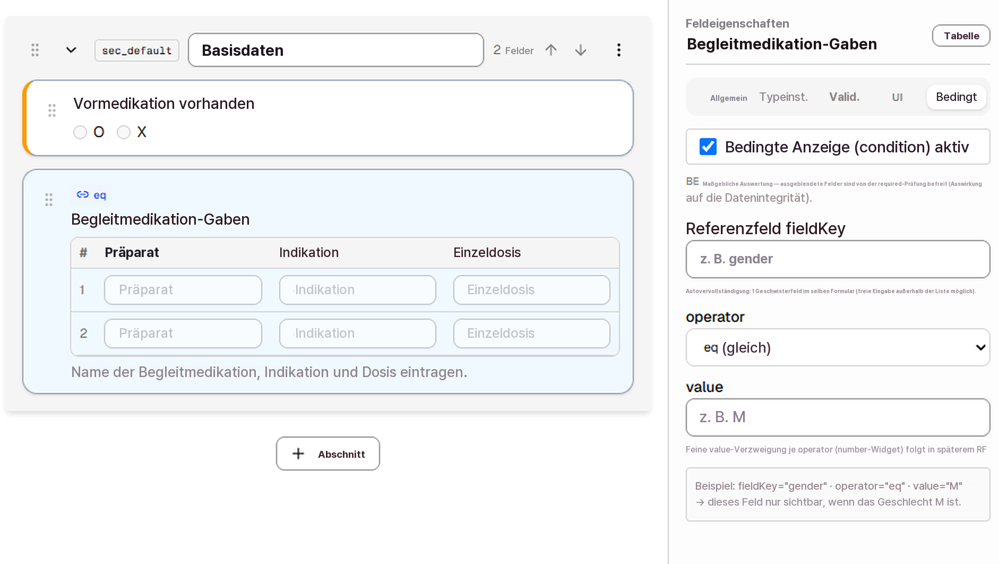
Bedingte Anzeige (condition) aktiv — Wenn aktiviert, werden die folgenden Bedingungseinstellungen angezeigt.
Über der Tabelle auf dem Canvas erscheint das Badge 🔗 eq und zeigt an, dass eine Bedingung angewendet wird.
Referenzfeld fieldKey — ein anderes Feld im selben Formular, das als Grundlage der Bedingung dient. Geschwisterfelder desselben Formulars werden automatisch vervollständigt; Werte, die nicht in der Liste stehen, können Sie auch direkt eingeben.
operator — die Vergleichsart. Standard ist eq (gleich).
value — der Vergleichswert. Geben Sie den gespeicherten Wert des Referenzfelds ein. 6.2
⚠ Bildschirmhinweis — „ausgeblendete Felder sind von der required-Prüfung befreit (Auswirkung auf die Datenintegrität).“ Die Bedingung wird vom System ausgewertet.
Beispiel unten — fieldKey="gender" · operator="eq" · value="M" → dieses Feld nur sichtbar, wenn das Geschlecht M ist.
Zu beachten
Unbedingt prüfen Datenschäden · Formular nicht abschließbar
- • ⛔ Wird eine Bedingung festgelegt, entfällt die Pflichtprüfung. Solange die Tabelle verborgen ist, weil die Bedingung nicht erfüllt ist, wird das Formular im leeren Zustand abgeschlossen, auch wenn die Tabelle Pflicht ist und auch wenn es Pflichtspalten gibt. 2.2
- • ⛔ Wird die Bedingung falsch, nachdem bereits Zeilen eingegeben wurden, verschwindet die Tabelle vom Bildschirm. Die Zeilen bleiben erhalten; wird die Antwort auf die vorherige Frage nachträglich geändert, müssen die verbliebenen Zeilen daher separat gelöscht werden. 5.3
Leicht missverständliches Verhalten
- • Eine Tabelle hat keine Stelle, um „Keine“ einzutragen. Wenn Sie eine Ja/Nein-Frage voranstellen und diese Tabelle als Bedingung damit verknüpfen, wird Probanden, auf die sie nicht zutrifft, die Tabelle nicht angezeigt, sodass sich eine leere Tabelle von einer fehlenden Angabe unterscheiden lässt. 2.1 · 2.2
Hinweis
- • Wenn Sie die Bedingung aktivieren und das Referenzfeld leer lassen, ist die Bedingung nicht erfüllt. Geben Sie unbedingt ②~④ vollständig ein. 6.2
6.2Bedingung festlegen
Überblick
Dies ist der Zustand, in dem die in 6.1 aktivierte Bedingung vollständig eingegeben ist. Mit dieser Einstellung wird die Tabelle nur dann angezeigt, wenn der Wert des Felds „Vormedikation vorhanden“ 1 ist. Dieselbe Beziehung wie bei der Validierungsregel in 4.3 wird hier auf andere Weise ausgedrückt — statt das Speichern zu blockieren, wird gar nicht erst gefragt. Vergleichen Sie die beiden Bildschirme nebeneinander.
Bildschirmbeschreibung
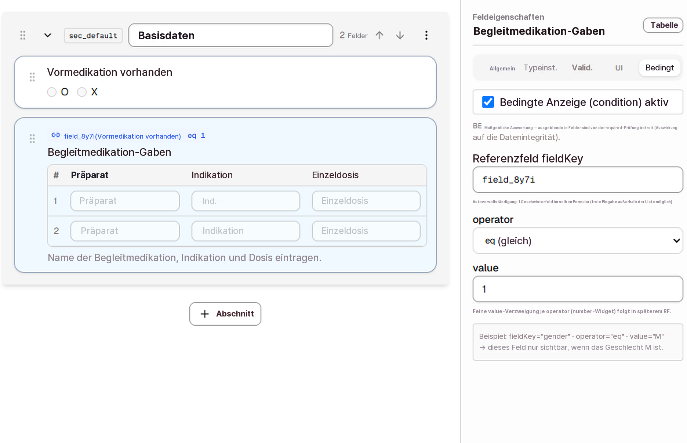
Vormedikation vorhanden 1 istReferenzfeld fieldKey = field_8y7i — verweist auf das Feld „Vormedikation vorhanden“ im selben Formular. Es verweist auf dasselbe Feld wie die Validierungsregel 4.3, doch da die Aufnahmen zu unterschiedlichen Zeitpunkten entstanden, unterscheidet sich nur die Zeichenkette des automatisch vergebenen Schlüssels. 4.3
Ergebnis der Eingabe von ①~③ — das Canvas-Badge wird zu 🔗 field_8y7i(Vormedikation vorhanden) eq 1 konkretisiert.
operator = eq (gleich)
value = 1 — geben Sie nicht das auf dem Bildschirm sichtbare O, sondern den gespeicherten Wert dieser Option ein.
⚠ Bildschirmhinweis — „ausgeblendete Felder sind von der required-Prüfung befreit (Auswirkung auf die Datenintegrität).“
Beispiel unten — fieldKey="gender" · operator="eq" · value="M" → dieses Feld nur sichtbar, wenn das Geschlecht M ist.
Zu beachten
Unbedingt prüfen Datenschäden · Formular nicht abschließbar
- • ⛔ In value geben Sie nicht den Bildschirmtext, sondern den gespeicherten Wert ein. Wird „Vormedikation vorhanden“ auf dem Bildschirm als
O·Xangezeigt und Sie tragenOein, ist die Bedingung nie erfüllt und die Tabelle wird nie angezeigt. Prüfen Sie zuerst den gespeicherten Wert in der Optionsliste des Referenzfelds. - • ⛔ Wird der gespeicherte Wert des Referenzfelds geändert, bricht die Bedingung unbemerkt. Ändern Sie den gespeicherten Wert von
1aufY, ist diese Bedingung ohne Fehlermeldung einfach nicht mehr erfüllt — deshalb ist eine Änderung gespeicherter Werte nach der Veröffentlichung riskant. - • Dieselbe Beziehung lässt sich auch mit einer Validierungsregel 4.3 abbilden. Werden beide gesetzt, entsteht eine Doppelung, die weder abfragt noch das Speichern zulässt; verwenden Sie daher nur eine davon — bei Tabellen wird die bedingte Anzeige empfohlen. 6.1
Leicht missverständliches Verhalten
- • Prüfen Sie die Einstellung anschließend in der Vorschau. Ändern Sie den Bezugswert und prüfen Sie, ob die Tabelle tatsächlich erscheint und verschwindet.
Anhang
- 7.1Einstellungen je Tab auf einen Blick
- 7.2Unbedingt merken · Nicht behandelt
7.1Einstellungen je Tab auf einen Blick
Einstellungen je Tab
| Tab | Element | Was wird festgelegt | Abschnitt |
|---|---|---|---|
| Allgemein | fieldKey | Ein einziger Schlüssel, unter dem die gesamte Tabelle gespeichert wird (nach dem Speichern nicht ändern) | 2.1 |
| label (Anzeigename) | Titel über der Tabelle — eine andere Ebene als die Spaltennamen | 2.1 | |
| description (Hilfetext) | Ergänzende Beschreibung unter der Tabelle — „wenn es keinen einzigen Eintrag gibt“ angeben | 2.1 | |
| Pflichtfeld | Ob mindestens 1 Zeile vorhanden sein muss — ⚠ die Spaltenpflicht ist stärker | 2.2 | |
| SDV-Verifizierung | Ob Gegenstand des CRA-Quelldatenabgleichs — die einzige Phase, in der fehlende Zeilen gefunden werden | 2.3 | |
| Typeinstellungen | Spalten-fieldKey | Speicherschlüssel dieser Spalte — vor der Veröffentlichung endgültig festlegen | 3.3 |
| Spalten-label | Spaltenkopf der Tabelle und zugleich Hinweistext in der Zelle (ersetzt placeholder) | 3.3 · 5.4 | |
| Spaltentyp | Eingabeart dieser Spalte — 9 Typen (Zahlenwerte unbedingt als Zahl) | 3.2 · 3.3 | |
| Spaltenpflicht | ⚠ Es wird je Zeile geprüft, ob diese Zelle ausgefüllt ist | 3.3 | |
| Validierung | ruleType | Nur „Vergleich mit anderem Feld“ funktioniert | 4.2 · 4.3 |
| Format (Regex) | ⛔ Wird es gesetzt, bleibt das Speichern dauerhaft blockiert — nicht verwenden | 4.2 | |
| Wertebereich · Dezimalstellen | ⛔ bewirkt unbemerkt gar nichts — keine Begrenzung der Zeilenanzahl | 4.2 | |
| Vergleichselement | ⛔ Wird die Tabelle selbst gewählt, ist das Speichern dauerhaft blockiert | 4.3 | |
| UI | Layoutbreite | ⚠ unbedingt Voll — schon bei Halb bricht der Spaltenkopf um | 5.2 |
| Schreibgeschützt | Anzeigen, aber nicht änderbar — auch die Schaltfläche zum Hinzufügen von Zeilen verschwindet | 5.3 | |
| Ausblenden | Keine Anzeige auf dem Bildschirm — gespeicherte Zeilen bleiben erhalten | 5.3 | |
| placeholder · helpText | ⛔ placeholder wird nicht angewendet · nur helpText funktioniert | 5.4 | |
| Bedingt | Bedingung aktiv | Ob bedingte Anzeige verwendet wird (von der Pflichtprüfung befreit) | 6.1 |
| Referenzfeld fieldKey | Feld im selben Formular als Grundlage der Bedingung | 6.2 | |
| operator · value | Vergleichsart und Vergleichswert (gespeicherten Wert eingeben) | 6.2 |
Pflicht auf zwei Ebenen — welche wirkt wie?
| Einstellung | Wo | Was wird geprüft | Deaktiviert = überspringbar? |
|---|---|---|---|
| Pflicht für die gesamte Tabelle | Tab „Allgemein“ „Pflichtfeld“ 2.2 | Ob mindestens 1 Zeile vorhanden ist | Ja — nur ohne jede Spaltenpflicht |
| Spaltenpflicht | Tab „Typeinstellungen“, Spalte „Pflicht“ 3.3 | Ob diese Zelle je Zeile ausgefüllt ist | Nein — die Tabelle wird auch ohne Pflicht für die gesamte Tabelle mitgezählt |
7.2Unbedingt merken · Nicht behandelt
Unbedingt merken
Unbedingt prüfen Datenschäden · Formular nicht abschließbar
- • Wählen Sie im Tab „Validierung“ als „Vergleichselement“ nicht die Tabelle selbst. Sie erscheint zwar in der Liste, doch bei Auswahl entsteht ab der ersten eingetragenen Zeile ein Verstoß und das Speichern ist dauerhaft blockiert. 4.3
- • Setzen Sie auch kein „Format (Regex)“. Aus demselben Grund entsteht bei jeder Eingabe ein Verstoß. 4.2
- • Hat auch nur eine Spalte die Pflichtmarkierung, ist die Tabelle nicht überspringbar, selbst wenn die Pflicht für die gesamte Tabelle deaktiviert ist. Zudem wird sogar je Zeile geprüft, ob diese Zelle ausgefüllt ist — löschen Sie leere Zeilen. 2.2 · 3.3
- • Stellen Sie die Layoutbreite auf Voll. Schon bei Halb bricht der Spaltenkopf in zwei Zeilen um und Zelltexte werden abgeschnitten. 5.2
- • Ohne definierte Spalten kann nichts eingegeben werden. Ist auf dem Canvas keine Tabelle sichtbar, liegt dieser Zustand vor. 1.1 · 3.1
- • In placeholder eingetragener Text wird nirgends angezeigt. Der Hinweis in den Zellen ist der Spaltenname; korrigieren Sie daher das Spalten-label. 3.3 · 5.4
- • Legen Sie Zahlenspalten unbedingt als Typ Zahl an. Bei Text werden Einheiten mit eingetragen, sodass weder Auswertung noch Vergleich möglich ist. 3.3
Leicht missverständliches Verhalten
- • Die 2 Zeilen auf dem Canvas sind eine Vorschau. Die echte Eingabemaske beginnt mit 1 Zeile, und der Erfasser erweitert sie mit [Zeile hinzufügen]. 3.2
- • Es gibt keine Stelle, um „Nicht zutreffend“ einzutragen. Die Standardlösung ist, eine Ja/Nein-Frage voranzustellen und über die bedingte Anzeige zu verknüpfen. 2.1 · 6.1
- • Regeln, die jede einzelne Zelle prüfen, gibt es nicht. An einer Spalte steuerbar sind nur Typ und Pflicht. 4.1
Hinweis
- • Bei Schreibgeschützt verschwindet die Schaltfläche zum Hinzufügen von Zeilen. Bei einer Tabelle bedeutet dies nicht „nur ansehen“, sondern das Erfassen selbst wird unmöglich. 5.3
Nicht in diesem Dokument behandelt
※ „Nicht gemessen“ zulassen — wird im Tab „Allgemein“ gar nicht angezeigt. Da eine Tabelle mehrere Werte enthält, ist es nicht möglich, „nicht feststellbar“ als einen einzelnen Eintrag zu erklären. Daher enthält dieses Handbuch keinen Abschnitt zu „Nicht gemessen“. Fälle, auf die die Tabelle nicht zutrifft, behandeln Sie mit der bedingten Anzeige. 1.1 · 6.1
AE-Bedeutungsrolle — wird im Tab „Allgemein“ gar nicht angezeigt. Die Rolle für unerwünschte Ereignisse wird Ja/Nein- oder Einzelauswahlfeldern zugewiesen und kann einer Tabelle nicht zugewiesen werden. 1.1
Minimale · maximale Zeilenanzahl — ein Element zum Festlegen gibt es nicht. Beim Löschen von Zeilen gibt es nur die Einschränkung, dass nicht weiter gelöscht werden kann, wenn nur noch die letzte 1 Zeile übrig ist. Wird ein Kriterium für die Zeilenanzahl benötigt, weisen Sie im Hilfetext darauf hin und prüfen Sie es bei der SDV. 3.1
Standardwert (defaultValue) — im Tab „Typeinstellungen“ gibt es dieses Element nicht. Da eine Tabelle mehrere Werte enthält, gibt es kein Mittel, sie vorab auszufüllen. 3.1
Automatische Berechnung (calculation) — im Tab „Typeinstellungen“ gibt es dieses Element nicht. Die gesamte Tabelle als einen einzigen Zahlenwert zu berechnen, ist nicht möglich. Wird eine Summe benötigt, legen Sie ein separates Zahlenfeld an. 3.1
Validierungen · Bedingungen mit Verweis auf Spalten — ein Spalten-fieldKey gilt nur innerhalb der Tabelle, daher kann in Validierungsregeln oder der bedingten Anzeige anderer Felder nicht direkt darauf verwiesen werden. 3.2 · 4.1
Verweise in Projekt-Validierungsregeln — im Bildschirm „Projekt-Validierungsregeln“, der Werte anderer Formulare prüft, kann ein Tabellenfeld nicht als Referenzziel ausgewählt werden. Da der Wert ein Zeilenbündel ist, werden Pfade auf Zellebene noch nicht unterstützt. 4.1
Typen, die nicht als Spalte verwendbar sind — Mehrzeiliger Text · Datei-Upload · Adresse · Skala sowie alle Container wie Tabelle·